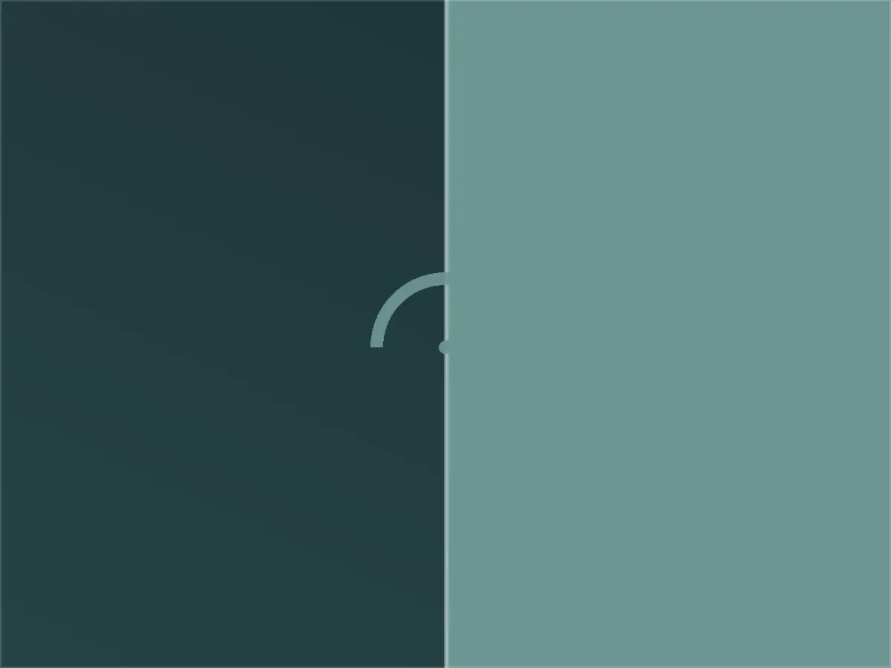
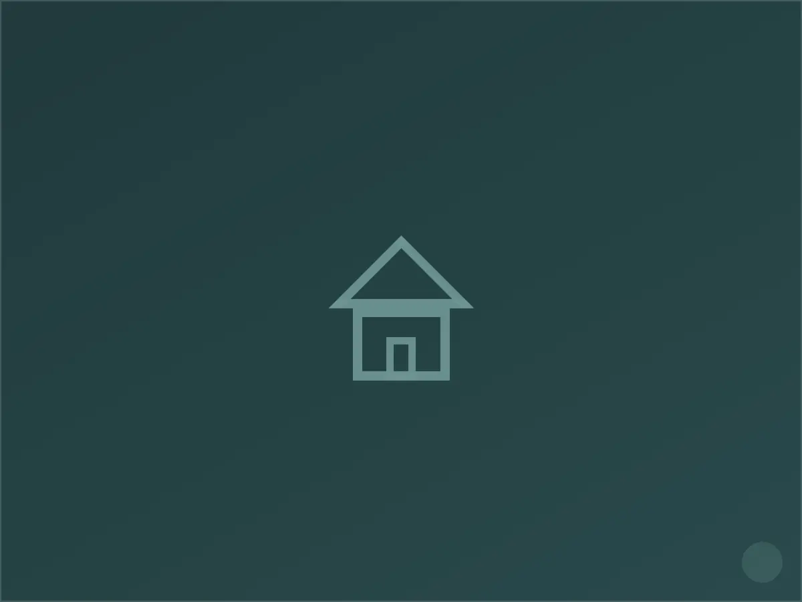

كهربائي في حي السلام، الرياض
حي السلام حي هادئ إلى حد كبير، تغلب عليه العائلات المستقرة التي تفضّل التعامل مع جهة واحدة موثوقة على مدى سنوات بدل تجربة فني جديد كل مرة. نتفهم هذا جيداً، ولهذا نبني علاقتنا مع عملاء السلام على الشفافية أولاً: قبل أي إصلاح، نشرح للعميل ما وجدناه بالضبط ولماذا حدث العطل، لا نكتفي بإصلاحه وترك المنزل.
أولوية السلامة هنا تأتي قبل السرعة. كثير من طلباتنا في هذا الحي تبدأ بسؤال بسيط: "هل هذا آمن على الأطفال؟" — سواء كان مفتاح إنارة يسخن، أو مقبس قريب من الأرض. نجيب على هذا السؤال بفحص فعلي لا بطمأنة لفظية فقط.
خدماتنا الكهربائية في السلام
نقدّم في حي السلام كامل الأعمال الكهربائية المنزلية: نُصلح الأعطال الطارئة، نُنفّذ الصيانة الدورية للوحات التوزيع، ونُنجز التمديدات الجديدة والتوسعات بما يشمل تمديد الأسلاك، تركيب المفاتيح والمقابس، وتأهيل نقاط التأريض. نغطي أيضاً تركيب الإنارة الداخلية والخارجية وربط الدوائر بأجهزة التكييف والمطابخ الكهربائية.

خصوصية حي السلام — ما نلاحظه في هذا الحي تحديداً
أنواع المباني الشائعة:
- فلل عائلية هادئة متوسطة العمر (١٠-٢٠ عاماً) بتمديدات تقليدية سليمة غالباً
- منازل بغرف أطفال ومساحات لعب تحتاج مقابس حماية إضافية
- بعض العمائر السكنية الصغيرة ذات لوحة موزعة بسيطة

لماذا يختارنا سكان السلام
استجابة سريعة
نصل عادة خلال ٤٥-٦٠ دقيقة من البلاغ، ولدينا فريق مخصص لتغطية النسيم والأحياء المحيطة به.
خبرة بطراز الحي
نقدّم في السلام تقرير سلامة كهربائية مبسطاً بعد كل زيارة، يوضح ما تم فحصه وما هو آمن وما يحتاج متابعة لاحقاً — بلغة واضحة غير تقنية.
ضمان مكتوب
كل عمل تمديد أو إصلاح يصدر له ضمان مكتوب يغطي القطع والتنفيذ لمدة تصل إلى سنتين.
خطوات العمل
التواصل
اتصال أو رسالة واتساب، نطلب وصفاً مختصراً للعطل لتجهيز الفني والأدوات المناسبة قبل التحرك.
المعاينة
فحص ميداني دقيق للوحة والدائرة المتأثرة، وتوضيح السبب والتكلفة قبل البدء بأي تنفيذ.
التنفيذ
إصلاح أو تمديد وفق ما تم الاتفاق عليه، مع اختبار الدائرة بعد الانتهاء وتسليم ضمان مكتوب.
أسئلة شائعة من سكان السلام
عندنا أطفال صغار، هل يمكن تركيب حماية إضافية للمقابس؟
نعم، نوفر مقابس بقاطع أمان وأغطية حماية للمقابس المكشوفة، وهي من أكثر الطلبات شيوعاً في حي السلام.
هل تفحصون المنزل بالكامل أم العطل المُبلّغ عنه فقط؟
نبدأ بالعطل المبلغ عنه، لكننا نقترح دائماً فحصاً سريعاً للوحة الرئيسية ونقاط الخطر الشائعة كجزء من نفس الزيارة دون تكلفة إضافية للفحص البصري.
كم مرة يُنصح بفحص كهرباء المنزل وقائياً؟
نوصي بفحص سنوي بسيط للمنازل التي عمرها أكثر من عشر سنوات، وهذا كافٍ لاكتشاف أي تآكل أو تراخي في التوصيلات قبل أن يتحول إلى عطل فعلي.